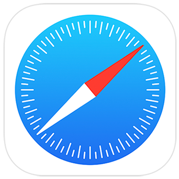

O que são navegadores?
Navegadores são programas usados para acessar páginas da Internet. Eles permitem abrir sites, pesquisar informações, assistir vídeos e utilizar diversos serviços online.
.jpg)
Principais navegadores
| Navegador | Empresa | Característica |
|---|---|---|
| Google Chrome | Rápido e bastante utilizado | |
| Mozilla Firefox | Mozilla | Foco em privacidade |
| Microsoft Edge | Microsoft | Integrado ao Windows |
| Safari | Apple | Utilizado em dispositivos Apple |
| Opera | Opera | Possui vários recursos |
Google Chrome
O Google Chrome é um navegador desenvolvido pela empresa Google. Ele é conhecido por sua velocidade, facilidade de uso e grande quantidade de extensões.
Mozilla Firefox
O Mozilla Firefox é desenvolvido pela Mozilla. O navegador possui recursos de privacidade e permite instalar diferentes extensões.
Microsoft Edge
.jpg)
O Microsoft Edge é desenvolvido pela Microsoft. Ele é o navegador padrão encontrado atualmente nos computadores com Windows.
Safari

O Safari é o navegador desenvolvido pela Apple. Ele é utilizado principalmente em computadores, celulares e tablets da empresa.
O que podemos fazer com um navegador?
- Acessar sites
- Pesquisar informações
- Assistir vídeos
- Ler notícias
- Estudar
- Fazer compras online
- Acessar redes sociais
Sites oficiais
Confira os sites oficiais de alguns navegadores:
Google Chrome Mozilla Firefox